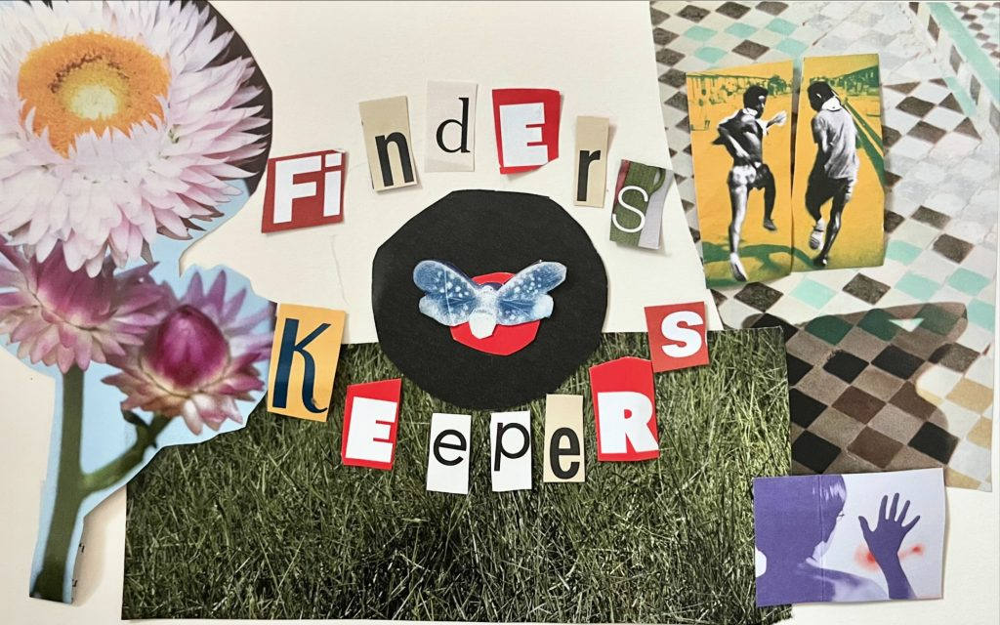

Produced segments for In the Loop and Say More — guest research, script editing, and call screening for WBEZ's daily talk programs.
Listen: How the second Trump admin impacted Chicago during its first year →
Listen: Back in print, Chicago Reader welcomes a new era →
Listen: How are Chicago’s indie venues adapting to growing challenges? →
Hamrah Arts Club is an independent creative mentorship program for youth with refugee status. I produced and edited the Hamrah Oral History Project alongside youth participants.
As WHPK's station manager, I managed all station equipment, programming, special events, and volunteers, and worked with our engineering team to keep our FM signal strong. WHPK is unique because it is both a University station and a Community station, and this made my work a million times more interesting. Some of our radio hosts are 19 year old college freshmen, and some have been at WHPK since the 1960s. I also worked on the show production side of things. I booked and produced over 20 on-air performances for our Friday Night Pure Hype Series.
While at WHPK, I hosted Finders-Keepers Radio, a weekly live-broadcast interview project, across FM radio and YouTube for four years.
